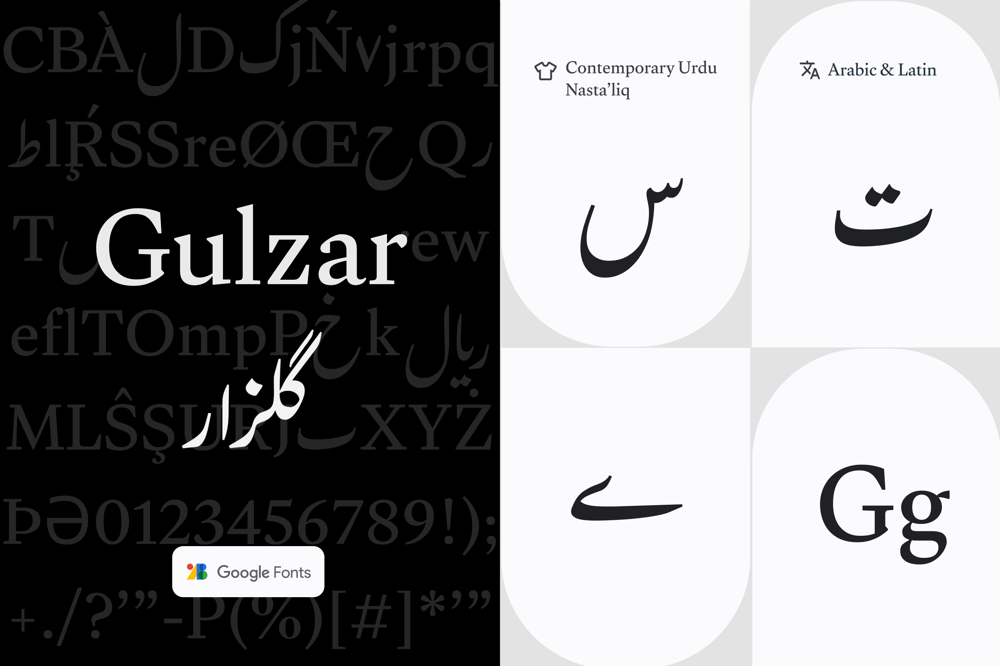

Gulzar: Expanding the variety of Urdu Nasta'liq options
To give Urdu speakers more typeface choices, in July 2022, Google Fonts added Gulzar, a new Nasta'liq Urdu typeface.
Simon Cozens, Dr. Borna Izadpanah, and Dr. Fiona Ross conducted their own research and consulted with Urdu language specialists in Pakistan and the United Kingdom to create the Gulzar Urdu Nasta'liq typeface project. Gulzar means "flower meadow" in Urdu.
Izadpanah is a native Persian speaker from Tehran, Iran. He learned Nasta'liq as a model for Persian handwriting in primary school.
"Designing a digital Nasta'liq typeface was my long-held dream," Izadpanah stated. As the principal Gulzar designer, he conducted the preliminary research and drew the glyphs.
Ross was familiar with the Urdu language and type design from her language studies and earlier work on two Nasta'liq typefaces, Sheeraz and Qalmi, for which Linotype acquired a patent.
To make a modern digital font based on the Urdu flavor of the Nasta'liq style, Izadpanah studied the proportions, stroke modulation, and character features in calligraphy manuals and a collection of lettering specimens
To learn more, visit "Gulzar: Expanding the variety of urdu Nasta'liq options" (English, Urdu) and "Why are there so few Urdu fonts?" (English, Urdu).